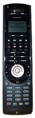

Logitech Harmony Fernbedienung
Dieser Artikel wurde für die folgenden Ubuntu-Versionen getestet:
Ubuntu 16.04 Xenial Xerus
Zum Verständnis dieses Artikels sind folgende Seiten hilfreich:

Logitech Harmony  ist eine Serie von Universalfernbedienungen, also Fernbedienungen mit denen man mehrere Geräte auf einmal steuern kann. Diese werden über eine Webseite programmiert. Ist die Programmierung abgeschlossen, so wird eine Datei auf die Fernbedienung übertragen. Mit Hilfe der Bibliothek Concordance
ist eine Serie von Universalfernbedienungen, also Fernbedienungen mit denen man mehrere Geräte auf einmal steuern kann. Diese werden über eine Webseite programmiert. Ist die Programmierung abgeschlossen, so wird eine Datei auf die Fernbedienung übertragen. Mit Hilfe der Bibliothek Concordance  ist es externen Programmen und Skripten erlaubt, Logitech Harmony Fernbedienungen unter Linux anzusprechen. Welche Modelle der Fernbedienung derzeit unterstützt werden, kann auf der Webseite des Entwicklers nachgelesen werden.
ist es externen Programmen und Skripten erlaubt, Logitech Harmony Fernbedienungen unter Linux anzusprechen. Welche Modelle der Fernbedienung derzeit unterstützt werden, kann auf der Webseite des Entwicklers nachgelesen werden.
Concordance teilt sich in zwei Teile auf: die eigentliche Bibliothek libconcord und das Terminalprogramm concordance, mit dem die Fernbedienung angesprochen werden kann. Des weiteren gibt es mit congruity ein Pythonscript, welches eine simple grafische Oberfläche zur einfacheren Verwaltung der Fernbedienung bietet.
Installation¶
Es genügt, die beiden Pakete aus den Paketquellen zu installieren [1] und danach die udev Regeln zu erweitern.
congruity
concordance
 mit apturl
mit apturl
Paketliste zum Kopieren:
sudo apt-get install congruity concordance
sudo aptitude install congruity concordance
udev-Regel anlegen¶
Im Idealfall ist es nicht nötig eine solche udev-Regel anzulegen. Sollte die Fernbedienung aber nicht vom System erkannt werden, so muss dann doch eine Regel für das Gerät angelegt werden. Dazu ist es notwendig die Vendor- und Product-ID der jeweiligen Fernbedienung zu ermitteln. Dazu in einem Terminal [2]
lsusb
bei, per USB, angeschlossener Fernbedienung eingeben und die Vendor:Product-ID notieren. Als Ausgabe erscheint folgendes:
Bus 007 Device 001: ID 1d6b:0002 Linux Foundation 2.0 root hub Bus 003 Device 001: ID 1d6b:0002 Linux Foundation 2.0 root hub Bus 006 Device 001: ID 1d6b:0001 Linux Foundation 1.1 root hub Bus 005 Device 008: ID 046d:c111 Logitech, Inc.
Nun muss eine neue Datei namens 85-harmony.rules im Pfad /etc/udev/rules.d erzeugt [3] werden. Diese muss folgenden Inhalt haben:
SYSFS{idVendor}=="046d", SYSFS{idProduct}=="[ID_PRODUCT]", MODE="666"SYSFS{idProduct}=="[ID_PRODUCT]" muss auf das eigene Modell abgestimmt sein. Hier einige Beispiele:
| Produktbezeichnung | ID_PRODUCT |
| Harmony 555 (Mocha Grande) | c111 |
| Harmony 885 (Espresso) | c110 |
| Harmony 300 (wird von Concordance z.Z. nicht unterstützt) | c124 |
Damit ergibt sich dann folgender oder ähnlicher Aufbau für eine Harmony 555:
SYSFS{idVendor}=="046d", SYSFS{idProduct}=="c111", MODE="666"Nachdem udev mittels folgenden Befehls
sudo /etc/init.d/udev restart
neu gestartet wurde wurde, kann das Gerät abgezogen und wieder angesteckt werden. Durch die Eingabe von:
concordance -i
kann geprüft werden, ob die Verbindung funktioniert. Im Erfolgsfall sieht die Ausgabe folgendermaßen oder ähnlich aus:
Concordance 0.21 Copyright 2007 Kevin Timmerman and Phil Dibowitz This software is distributed under the GPLv3. Requesting Identity: 100% done Model: Logitech Harmony 555 (Mocha Grande) Firmware Version: 3.0 Hardware Version: 3.0 Config Flash Used: 13% (51 of 384 KiB) Success!
Backup¶
Bevor man über den Webbrowser und congruity die Harmony programmiert, sollte eine Sicherheitskopie der aktuellen Einstellungen in der Fernbedienung gesichert werden. Dazu die Fernbedienung mit dem USB-Kabel an den Rechner anschließen und im Terminal [2]
concordance --dump-config <dateiname.EZhex>
eingeben. Im Fehlerfall kann diese Sicherheitskopie jederzeit durch die Eingabe von
concordance --write-config <dateiname.EZhex>
wieder in die Fernbedienung geschrieben werden.
Programmierung der Fernbedienung¶
Auf der Website http://members.harmonyremote.com/EasyZapper/UserHome.asp kann nach der Eingabe der Benutzerdaten damit begonnen werden, die Fernbedienung zu programmieren. Sollen Daten auf dem Gerät gespeichert werden, so versucht der Browser die Datei mit der Endung EZhex bzw EZup herunterzuladen.
Im "Öffnen mit"-Dialog des Browsers muss nun der Pfad von Congruity angegeben werden, damit dies die Daten übernimmt und an Concordance weitergibt. Bei der normalen Installation lautet dieser: /usr/local/bin/congruity. Bei Versionen vor 9 entsprechend: /usr/bin/congruity. Funktioniert diese Vorgehensweise, bietet es sich an, bei jedem Download einer EZhex bzw. EZup-Datei diese automatisch mit Congruity zu öffnen. Dazu können entsprechende Einstellungen im jeweiligen Browser vorgenommen werden.
Normalerweise wird die Eintrichtung über die Webseite http://myharmony.com/ vorgenommen. Dabei kommt Silverlight zum Einsatz. Dies funktioniert allerdings nur unter Windows und Mac OS X.
Problemlösungen¶
Falls das Gerät nicht funktioniert, kann es daran liegen, das der Benutzer nicht in der Gruppe "plugdev" eingetragen ist.
- Erstellt mit Inyoka
-
 2004 – 2017 ubuntuusers.de • Einige Rechte vorbehalten
2004 – 2017 ubuntuusers.de • Einige Rechte vorbehalten
Lizenz • Kontakt • Datenschutz • Impressum • Serverstatus -
Serverhousing gespendet von